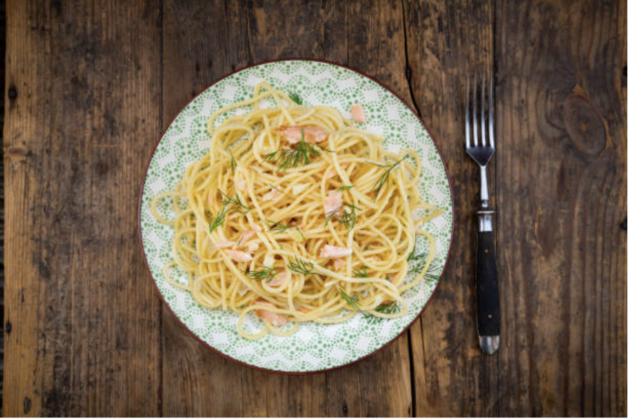

1. Bring a large pot of salted water to a boil. Cook spaghetti until cooked to be firm to the bite. Reserve 1 cup pasta water, then drain.
2. While pasta cooks, sauté pancetta or guanciale in a skillet over medium heat until crispy. Add garlic if using, cook 1 minute.
3. In a bowl, whisk together eggs, Parmesan, Pecorino, and a pinch of black pepper.
4. Add drained spaghetti to the skillet with pancetta. Remove from heat.
5. Quickly pour egg and cheese mixture over pasta, tossing vigorously to create a creamy sauce. Add reserved pasta water as needed.
6. Season with salt and more pepper. Serve immediately with extra cheese on top.
Click here to go back home.